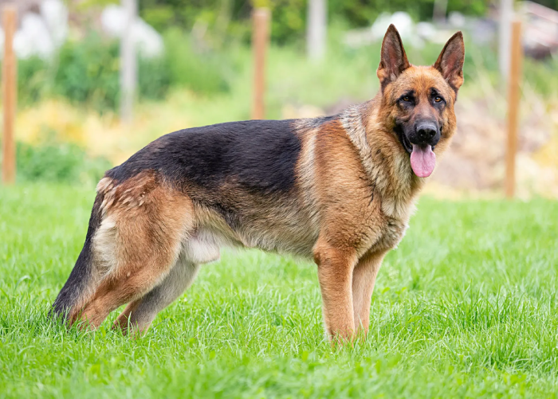

Welcome to our website
This is my dog.
NOT FOR SALE!!!!
The German Shepherd is a medium-sized dog breed native to Germany, also known as the Alsatian Wolfdog, German Wolfdog, German Shepherd, etc. The standard Kaohsiung dog is 62.5 centimeters, the female dog is 57.5 centimeters, and weighs 34 to 43 kilograms; the body is slightly elongated, the muscles are strong and tough, the bones are hard and strong, the joints are stable, the angles of the limbs are appropriate, and the gait is wide; the coat is durable Subject to all weather conditions.
Adipisicing elit